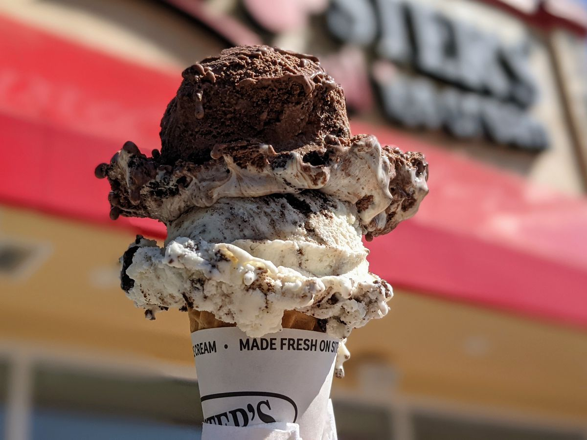

The Best (and Easiest) Ice Cream You'll Ever Make

Ice Cream Recipe
After a delicious meal, how can you not follow it up with some yummy ice cream?
The recipe below details what is needed and how yummy ice cream can be made.
Who can turn this down!
Ice Cream Ingredients
- 1 3/4 cups heavy cream
- 1 1/4 cups whole milk
- 3/4 cup sugar
- 1/8 teaspoon fine sea salt
- 1 tablespoon vanilla extract or
1 vanilla bean split in half lengthwise
- Optional: 2 cups of add-ins-soft brownies, cookies, and blondies work great
Instructions
- Pour 1 cup of the cream into a saucepan and add the sugar and salt.
Scrape the seeds of the vanilla bean into the pot and then add the vanilla pod to the pot.
Warm the mixture over medium heat, just until the sugar dissolves.
Remove from the heat and add the remaining cream, milk, and vanilla extract (if using extract).
Stir to combine and chill in the refirgerator.
-
When ready to churn, remove the vanilla pod, whisk mixture again and pour into ice cream maker.
Churn according to the manufacturer's instructions.
Transfer the finished ice cream to an airtight container and place in the freeser until ready to serve.
Enjoy!
Notes
Feel free to skip the simmer step and simply whish everything togetherm then pour directly into the ice cream maker.
The ice cream is absolutely delicious this way, as well as when simmered and chilled first.